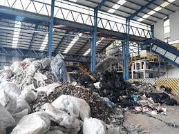
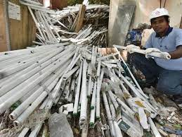
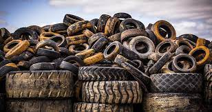

2.Construction and Demolition Debris

The term “construction and demolition debris” means waste building materials, packaging, and rubble resulting from construction, remodeling, repair, and demolition operations on pavements, houses, commercial buildings, and other structures. (C) Household waste .
3. Industrial/Commercial Waste
Commercial and industrial waste consists of dry waste generated by businesses, production units and offices. It can contain a wide variety of different materials, from plastics, paper and cardboard to metals, wood, glass and organic materials – most of which are valuable and exploitable.
4.Hazardous Waste Lamps.
Hazardous waste is a waste with properties that make it potentially dangerous or harmful to human health or the environment. The universe of hazardous wastes is large and diverse. Hazardous wastes can be liquids, solids, or contained gases.
5. Regulated Medical Waste
Regulated medical waste (RMW) is material generated in research, production and testing of biologicals or health care such as: Infectious animal waste. Human pathological waste. Human blood and blood products. Needles and syringes (sharps)
6.Electronic Waste

Electronic waste (e-waste), is a generic term used to describe all types of old, end-of-life or discarded electrical and electronic equipment, such as household appliances; office information and communications equipment; entertainment and consumer electronic equipment; lighting equipment; electric and electronic tools
7.Waste tires
A tire that is no longer mounted on a vehicle and is no longer suitable for use as a vehicle tire due to wear, damage, or deviation from the manufacturer's original specifications.